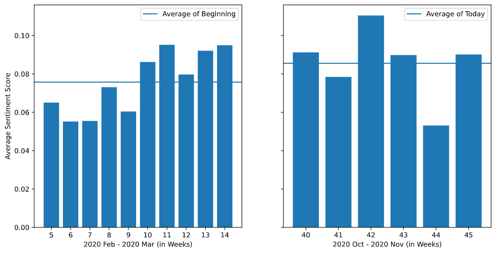

Have we adapted to lifestyle changes brought on by COVID-19?
Author: Dumblekar, Nakul Kishore (ndumblekar3@gatech.edu)
Year: 2020
Motivation: This analysis was intended to complete a course requirement for GaTech's ISyE 6740 in Fall 2020. Given the significance of the result, the analysis is being published to expand the scope of this direction of analysis.
Problem Statement:
Coronavirus Disease 2019 (COVID-19) made headlines first in January 2020[1], and continued to dominate conversation topics, news articles, and TV/online debates for the rest of 2020. As the virus evolved to debilitate the healthcare systems, most nations introduced country-wide lockdowns in Mar 2020 - Apr 2020[2], which brought life for many to a standstill, and changed our personal lives by taking interactions online. It also had a significant change in our professional lives where most work-from-home capable jobs were pushed out of the office. As we approach the end of 2020, people have adapted to most of these changes, and this has become the new norm for many. The study aims to understand if this adaptation to new lifestyles, and professional lives can be identified in changing sentiments expressed on social media platforms between Feb 2020 - Nov 2020. Further, we intend to understand if any change detected is statistically significant by comparing the change in mean sentiment scores.
Data Sources:
Data was sourced from a GitHub repository[3] containing tweet IDs sourced using specific keywords related to the pandemic. Data was specifically chosen for the months February, March, October, and November. The motivation for using this dataset is to calculate the mean sentiment score for 2020 Feb-Mar and compare with the mean sentiment score for 2020 Oct-Nov. The complete dataset consisted of 334,981 tweet IDs which were hydrated to obtain text and metadata for each tweet using the Hydrator[4] software. To hydrate tweets, a Twitter API developer key is required; this project was completed using a free student developer registration.
Methodology:
Data Preprocessing: The analysis focused on ‘English’ language tweets, and aimed to use ‘hashtags’ and ‘tweet text’ as feature vectors. Therefore, 292,569 tweets were excluded due to a combination of non-English language, non-English hashtags, and blank hashtags. From the resulting 42,412 tweets, 3,000 samples were taken for each month (Feb, Mar, Oct, Nov).
Feature Extraction: Tweets are casual statements and do not strictly adhere to grammar, spellings, and sentence construction, in general. However, within the words of each tweet, there are nouns, adjectives and verbs, which can provide an indication of the sentiment expressed by the tweet. The tweet texts were programmatically cleaned by removing punctuations, user mentions, URLs, word repetitions, stop-words, and symbols, resulting in only keywords which adequately summarize the intention of the tweet. The ‘hashtag’ in the tweet is a significant indicator of popularity, and sentiment of the tweet, so this was also included in the feature set.
Modeling: Given the unsupervised learning requirement for the feature set, NLP methods of word tokenization and sentiment analysis using adjectives in each feature set. The approach taken was to estimate the sentiment score for each word of the feature set text, and assign the average sentiment scores across all words as the sample sentiment score.
$$Y_{i, j} \in [-1.0, +1.0],$$
$$\forall i = 1, 2, 3, ..., n_j, \quad\text{and}, \quad \forall j = 1, 2, 3, ..., m$$
Where, $Y_{i, j} =$ average sentiment score of word $i$ in feature set $j$.
$$\bar{Y_j} = \sum_{i=1}^{n_j} \frac{Y_{i, j}}{n_j}, \quad \forall j = 1, 2, 3, ..., m$$
The above steps were performed on the complete dataset to estimate baseline sentiment scores for 2020 Feb-Mar, and the comparative sentiment scores for 2020 Oct-Nov. The specific word sentiment values were estimated using the “Pattern” library for Python[5], which is an open-source text mining module for Python containing a lexicon of adjectives (e.g., good, bad, amazing, irritating, ...) that occur frequently in product reviews, annotated with scores for sentiment polarity.
Result:
Analysis of Freuqency: The sentiment score for each sample was a real number between $[-1.0, +1.0]$. A threshold of $\pm 0.3$ to classify the sample with integer values as Negative (-1), Neutral (0), and Positive (+1).
Table 1: Sentiment Output
Sentiment
Feb-Mar
Oct-Nov
-1 (Negative)
277
270
0 (Neutral)
4844
4728
+1 (Positive)
879
1002
Based on frequency of sentiment categories for the same sample size across both time periods, the Positive sentiment has 123 more entries and is 7 entries lower on Negative sentiment.
Analysis of Mean: A frequency comparison is not conclusive to ascertain a potential change in sentiment. Therefore, the average sentiment scores for these timelines were also compared. The mean sentiment score for 2020 Feb-Mar is 0.075 and mean sentiment score for 2020 Oct-Nov is 0.085, which is small improvement.

Figure 1: Weekly Average Sentiment Score for Feb-Mar and Oct-Nov of 2020
Statistical Test of Means: To validate if the improvement in mean sentiment scores from 2020 Oct-Nov can be statistically significant, a Two-Sample t-test was performed assuming unequal variances as the environment influencing the population response is significantly varied and immeasurable, though the tested population is same between the two timelines.
The null hypothesis ($H_0$) is that the difference in means is 0. The t-test shows that, at a significance level of 0.05, the test statistic is greater than the one-tail estimated probability. Therefore, we reject the null hypothesis and conclude that there is a significant difference in the mean sentiment scores between the two timelines.
Conclusion & Future Scope:
In conclusion, the analysis shows a statistically significant shift in the mean sentiment scores between the onset of the pandemic and present day. This implies that there is some level of adaptation or comfort expressed in the sentiment of people today compared to the onset of COVID-19. While the scope of this project was limited, the sentiment estimation accuracy can be improved by using better datasets, refinement of the preprocessing pipelines, and leveraging better sentiment modeling techniques like n-grams, modality, subjectivity, etc. Further, this path of analysis can be a catalyst to investigate the causes of sentiment change, research the sustainability and long-term impact on social life, etc.
L. K. F. E. Chen E, "Tracking Social Media Discourse About the COVID-19 Pandemic: Development of a Public Coronavirus Twitter Data Set JMIR Public Health Surveillance 2020;6(2):e19273 DOI: 10.2196/19273 PMID: 32427106," [Online]. Available: https://github.com/echen102/COVID-19-TweetIDs
"Documenting the Now. (2020). Hydrator [Computer Software].," Retrieved from https://github.com/docnow/hydrator, 2020.
T. D. W. De Smedt, "Pattern for Python," Journal of Machine Learning Research, 13, 2031–2035, 2012.